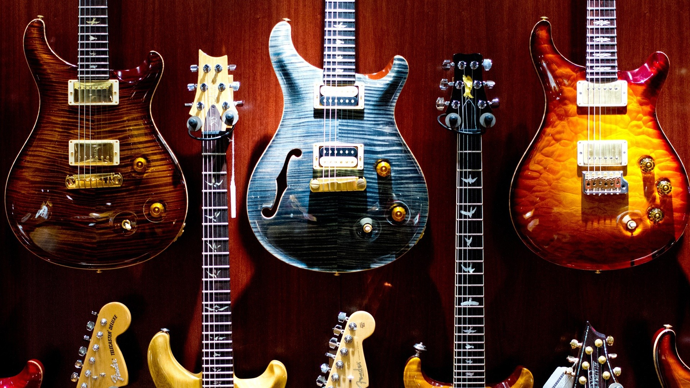

Last Rose of Summer is an online guitar store, founded in 2024 by Me. The idea came to life after I began playing electric guitar. Due to my passion for both the guitar and coding, I decided to mix both things in some sort of way. The code is not optimized at all, and a lot of things that I know has been thaught by the man itself ReduxFlakes. In consideration for him, I decided to dedicate a small portion of my site to one of his projects, Surfscape. Please visit his site once you're done with mine. (Please take into consideration that this Website is a mockup, so I'm not in fact selling guitars. Maybe one day 😊).
Here you can check what formats we have available on our shop right now. Thrive among the different formats and chose the one that fits you best! Each format has a small description that includes their history and the most common specs on each one.
Check out Songsterr, my predilect tablature app.
Here you can see what models we recommend for different audiences, ranging from begginers to professional guitarists. Please note that this guitars are just a recommendation, each guitar player should visit a real store and test to see which one suits him the best. Different guitars have different hardware and profiles, that are made for distinct genres and people. And remember, always stick with the guitar that you like, either expensive or cheap.
We advise you to check out this stores too! They have more equipment and supply different instruments and useful pieces of gear. Please note that some sites can be blocked on your region, due to their focus on a specific country.
As mentioned earlier, this website has a small section for my friend ReduxFlakes, that has helped me with a lot of things. Explore his projects and learn more about different things.
This is the recommendation of Last Rose of Summer, songs may change periodicaly so that you have always a challenge ahead. Keep pushing your limits and you'll reach pro level in no time!
This link redirects you to my personal website (under construction for now).